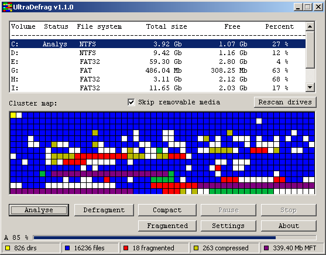
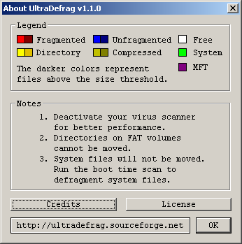
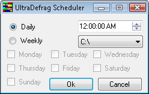

| |
UltraDefrag is an open source disk defragmenter for Windows NT 4.0 and later operating systems. It makes use of the same defragmenting API used by many other windows defrag utilities, both open and closed source. However, UltraDefrag has two features that make it unique. The first is that it has a kernel mode driver that does most of the work. The second is the ability to run the application at boot up time in a manner similar to chkdsk. This allows for faster defragmentation time and the ability to defragment all files including system files.
UltraDefrag supports the following filesystems FAT12/16/32, NTFS and on Vista UDF. UDF is a file system intended for optical media such as DVDs that unlike ISO9660, is rewriteable. It has also the ability to defragment volumes at boot time allowing you to move many system files that are always locked by the operating system. Currently all files besides the registry hives and the pagefile can be scanned at boot time. UltraDefrag can also defragment files and folders compressed by NTFS file system compression. And can even defragment floppies, although doing so is not particularly useful.
UltraDefrag binaries are available for the 32 bit and all 64 bit versions of Windows.
You can download the latest installer for UltraDefrag at the project homepage (http://ultradefrag.sourceforge.net/). Simply download and run the installer. No reboot is required.
Note that you must be an administrator to install and run UltraDefrag.
IMPORTANT You must disable your virus detection software before using UltraDefrag.
The console application is called udefrag.exe. It is placed in system32 directory by the installer. Therefore you can call it from the command line or run box.
The command line version takes one of three switches and a drive letter. The switches are as follows:
In addition the following switches can be used when defraging and compacting. They override the settings in the registry set by the gui described below. The defaults for the registry setting are set at compile time.
Specifying just the drive letter will cause UltraDefrag to defragment the drive. When the operation finishes or you stop the program with a Ctrl+C, the program will display the results to the console. If you abort the operation with Ctrl+C or close the shell window, UltraDefrag will exit safely without destroying any data.
The windows application is a simple application with one main form of fixed size and an about box. An illustration of the window as well as an explanation of their functionality is below:

List of volumes. This list all drives on the machine that you can scan. It has the following fields:
Volume (Drive Letter)
Status A description of the action being performed (Analyze, defrag, etc).
File Sytem type of file system contained on the volume.
Total Size
Free Free space
Percent Percent Free.
Skip Removeable Media Checkbox
Cluster Map This is a color coded representation of all drives. The about box explains what the colors represent.
Rescan Drives (Ctrl+R) This button will recheck all volumes in the system to see if some were added or removed.
Buttons
The following section explains the buttons along with listing their
shortcut keys.
Analyze (Ctrl+A) Scans the currently selected drive to determine how fragmented it is.
Defrag (Ctrl+D) Exactly what it says.
Compact (Ctrl+C) Moves all files to the beginning of the partition, defragmenting them if possible. The compact command does not work on volumes with the FAT filesystem because you cannot move directories on them.
Pause (Ctrl+P) Stops the currently running analyze or defrag operation. This behavior is the same as stop.
Stop (Ctrl+S) Stop the currently running analyze or defrag operation.
Fragmented (Ctrl+F) Display a report of all fragmented files on the system. This report is very small but useful. It is generated by the driver, so all versions of UltraDefrag generate it.
Settings (Ctrl+T) Displays the Settings Dialog. The settings dialog has three tabs. These settings are stored in the registry and override the setting hardcoded into the executable at compile time. The compile tome defaults are set in "src\dll\udefrag\settings.c".
Filter You can specify file to include and exclude from the scan as well as ignore files over a given size.
The patterns you supply for the include and exclude functionality applies to the whole path. For example, if you specify temp\ in the exclude path you would exclude both the temp folder (%WINDIR%\temp) and the internet explorer temporary files folder. Filter strings cannnot be longer than 4096 bytes.
You can specify maximum file size with the following suffixes (Kb | Mb | Gb | Tb).
GUI You can toggle the progress bar and specify the interval to update the map.
Report Specify the following settings for the report.
Type html or none.
Encoding UTF-18 or ASCII. Generally ASCII renders better in Internet Explorer and UTF-16 renders better in FireFox. UTF-16 is of course required to properly render Asian characters such as Japanese and Chinese.
Debug Print Normal or Detailed. Select normal to view useful messages about the analyse or defrag progress. Select detailed to create a bug report to send to the author when an error is encountered.
Boot time Settings releated to the boot time scan with the native executable.
Drive letters The drives to scan. Letters must be either separated by semicolons (;) or don't contain any separators between.
Defragment at next boot and Defragment every boot Check these boxes to chose when to defragment.
Include and Exclude file filters. These operate the same as the ones in the filter dialog.
About (F1)
Displays the about box shown below.
Included in the about box is a legend of the color codes found on the
cluster map. Some of the categories on the legend have a lighter and
darker color on them. The lighter colors represent files below the file
size threshold, and the darker colors represent files above the
threshold if one is set.

Progress bar This displays the progress of the currently running analyze, compact or defrag task. Note that selecting a different volume will cause this bar to disappear.
UltraDefrag also includes a new mode that allows you to run it at boot time in a manner similar to chkdsk. This is known as a native application.
Boot time settings may be specified in the gui. You may schedule a boot time scan for the next reboot, or at every reboot. The only restriction on boot time scans is that you may not scan encrypted volumes. This is because lsass.exe, the component of the operating system that reads encrypted volumes, is loaded after the native executable runs.
Everytime you run analyze, compact or defragment, a report of all files on the file system is created. This report has the following fields.
Number of fragments.
Filename
Comment This can be blank or contain one of three values:
[OVR] File is over limit.
[DIR] Object is a directory.
[CMP] Compressed file.
The command line version of UltraDefrag may be run out of system scheduled tasks, The process of adding a scheduled task instance of UltraDefrag is simplified throuth a utility called UltraDefrag Scheduler.NET. This small application requites Microsoft Framework 2.0to run. The simple gui has 4 settings.

The actual work of moving files to different clusters is performed through the windows API. What makes UltraDefrag superior to the standard windows defrag utility is that it uses its own algorithm to determine where to place files. Also, the actual work is done by the kernel driver ultradfg.sys. This enhances performance because there is no constant switching between user mode and kernel mode.
Source for UltraDefrag is available via subversion. The url is https://ultradefrag.svn.sourceforge.net/svnroot/. The program is written in C. The code is very clear and understandable. To build it you will need a C compiler and the Windows Driver Development Kit (DDK).
Please report all problems and bugs via the sourceforge bug tracker.
NOTE: Please include the following data in your bug report: